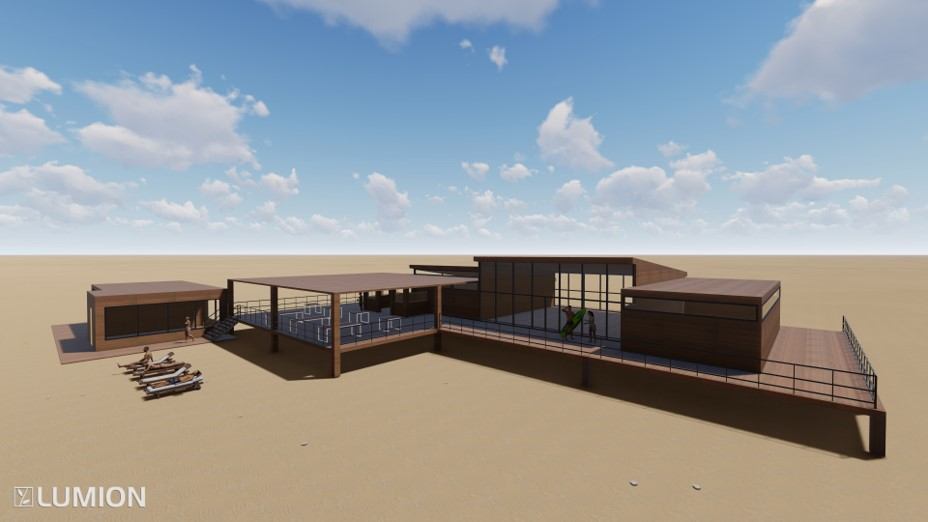

Strandpaviljoen
Maasvlakte, P6
15-04-2021
Dit project moest er een strandpaviljoen ontworpen worden voor parkeerplaats 6 bij de Maasvlakte. Aan de hand van een Programma van Eisen en een referentie onderzoek moest een ontwerp gemaakt worden. Een eis hieraan was dat het een demontabel gebouw werd, vanwege dat het in de winter niet gebruikt gaat worden. Ook moest het duurzaam worden en zelf voorzien kunnen worden van water en energie.
Mijn visie
Voor het paviljoen wou ik dat het een warme uitstraling zou krijgen, passend bij het warme weer wanneer mensen naar het strand gaan. Ook wou ik dat het aspecten kreeg die refereren naar surfen, bijvoorbeeld door het ingangsbord en het menu te weergeven op een surfplank. Ten slotte moest de inrichting een comfortabele plek vormen, voor de surfers en voorbijgangers die er een hapje komen eten, om er te rusten en een knusse verwelkomende uitstraling te geven.
